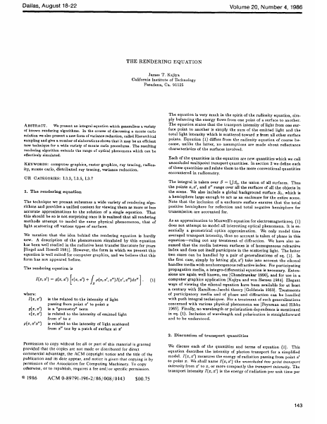
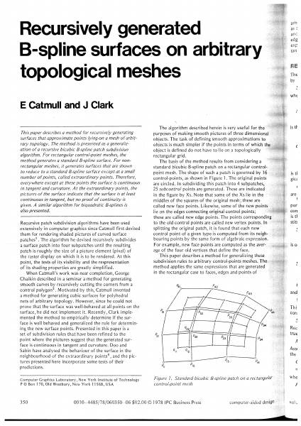
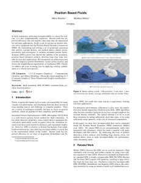
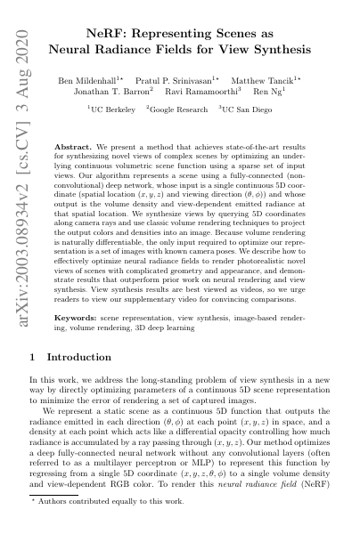

R Rendering and light transport  Kajiya, 1986. Select the page to read the PDF. An Improved Illumination Model for Shaded DisplayTurner Whitted · 1980 · recursive ray tracing The Rendering EquationJames T. Kajiya · 1986 · a unified statement of light transport Robust Monte Carlo Methods for Light Transport SimulationEric Veach · 1997 · path-space formulation and multiple importance sampling Physically Based Shading at DisneyBrent Burley · 2012 · production material models Spatiotemporal Reservoir ResamplingBitterli et al. · 2020 · ReSTIR for real-time path tracing
G Geometry and shape representation  Catmull & Clark, 1978. Select the page to read the PDF. Recursively Generated B-spline Surfaces on Arbitrary Topological MeshesEdwin Catmull & Jim Clark · 1978 · subdivision surfaces Marching CubesLorensen & Cline · 1987 · extracting surfaces from volumetric data Progressive MeshesHugues Hoppe · 1996 · continuous mesh simplification Poisson Surface ReconstructionKazhdan, Bolitho & Hoppe · 2006 · global implicit reconstruction DeepSDFPark et al. · 2019 · learned continuous signed-distance fields
P Physics and simulation  Macklin & Müller, 2013. Original author-page preview. Elastically Deformable ModelsTerzopoulos et al. · 1987 · energy-based deformable objects Large Steps in Cloth SimulationBaraff & Witkin · 1998 · implicit integration for cloth Stable FluidsJos Stam · 1999 · unconditionally stable semi-Lagrangian fluid simulation Visual Simulation of SmokeFedkiw, Stam & Jensen · 2001 · vorticity confinement for detailed smoke Position Based DynamicsMüller et al. · 2007 · direct positional constraint projection Position Based FluidsMacklin & Müller · 2013 · incompressible particle fluids in PBD XPBD: Position-Based Simulation of Compliant Constrained DynamicsMacklin, Müller & Chentanez · 2016 · time-step-independent compliance ChainQueen: A Real-Time Differentiable Physical SimulatorHu et al. · 2019 · differentiable MPM for deformable objects and control DiffTaichi: Differentiable Programming for Physical SimulationHu et al. · 2020 · automatic differentiation for high-performance simulators
N Neural graphics methods  Mildenhall et al., 2020. Select the page to read the PDF. Image Style Transfer Using Convolutional Neural NetworksGatys, Ecker & Bethge · 2016 · neural appearance synthesis NeRF: Representing Scenes as Neural Radiance FieldsMildenhall et al. · 2020 · continuous volumetric view synthesis Instant Neural Graphics PrimitivesMüller et al. · 2022 · multiresolution hash encoding 3D Gaussian Splatting for Real-Time Radiance Field RenderingKerbl et al. · 2023 · explicit differentiable splats